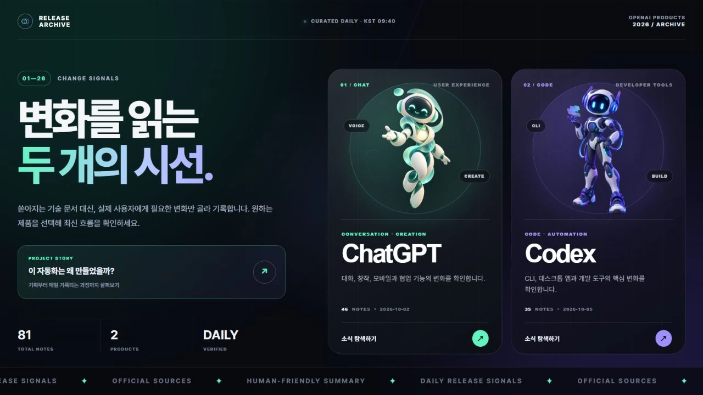
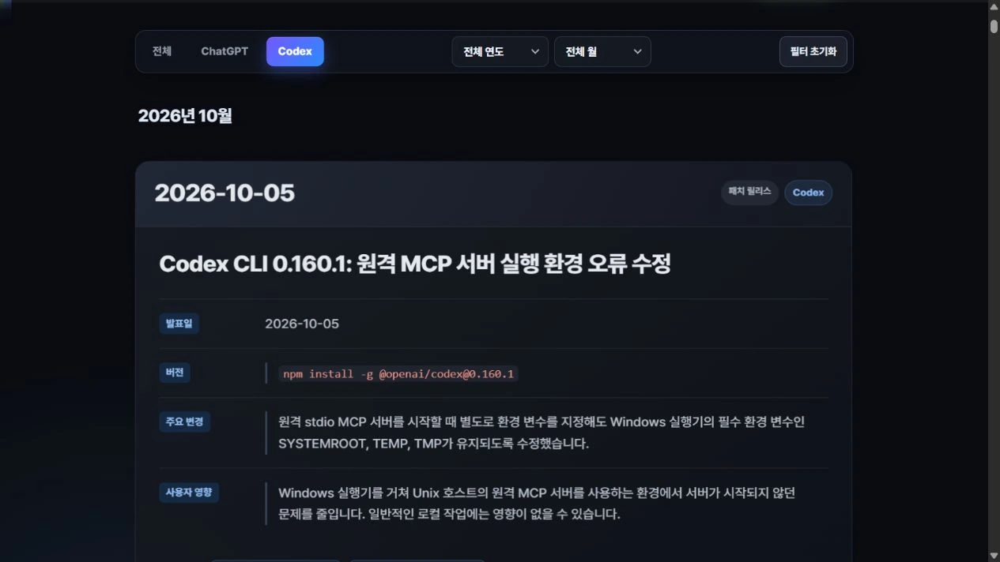
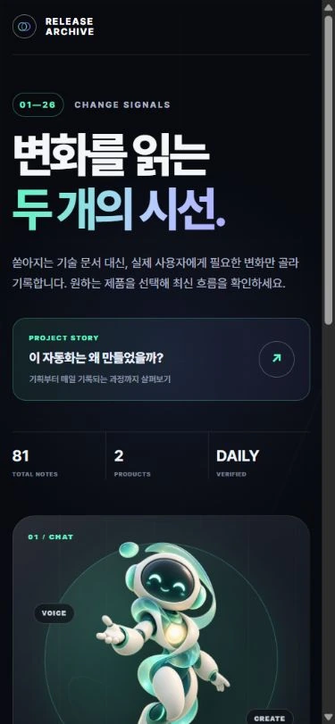
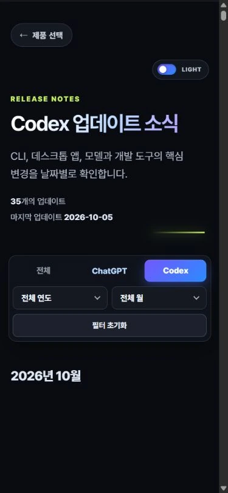

스크롤
제목·본문·이미지 순차 등장Lenis의 감속과 반복 가능한 등장 효과로 제작 흐름을 이어갑니다.
업데이트 소식 — 흩어진 변화를, 하나의 기록으로.

업데이트 아카이브가 해결하고자 한 문제와, 설정한 목표를 소개합니다.
02 / BRIEF
처음부터 끝까지 읽지 않아도,
나에게 달라지는 점을 알 수 있도록.
공식 발표가 여러 곳에 흩어져 있어 제품의 변화를 한 번에 살피기 어려웠습니다. 제품·날짜·영향을 같은 구조로 정리했습니다.
정보가 여러 채널에 분산되어 있었습니다.
확인 가능한 원문을 기준으로 기록합니다.
제품의 변화를 한눈에 확인할 수 있습니다.
기술 중심의 표현이 이해를 어렵게 했습니다.
변화가 작업과 사용 경험에 미치는 영향을 정리합니다.
사용 장면을 중심으로 설명합니다.
시간순 기록만으로는 필요한 내용을 찾기 어렵습니다.
관심 있는 제품과 기간을 선택합니다.
내게 필요한 범위부터 읽을 수 있습니다.
03 / IDENTITY
민트는 대화의 변화,
보라는 개발의 변화를 구분합니다.
RELEASE ARCHIVE
04 / SYSTEM
변화를 읽는 두 개의 시선.
사용자에게 달라지는 점을 남깁니다.
공식 출처와 발표일을 확인합니다.
사용자에게 달라지는 점.
이 예시에는 선택한 연도의 기록이 없습니다.
05 / EXPERIENCE
처음 방문한 사용자가 원하는 제품의 업데이트를 빠르게 찾고, 실제 변화까지 자연스럽게 이해할 수 있도록 구성한 화면 흐름입니다.
제품 선택에서 시작해 기간을 좁히고, 변화를 읽은 뒤 공식 출처로 이어지는 간결한 네 단계의 흐름을 설계했습니다.
ChatGPT 또는 Codex 선택
원하는 기간으로 범위 좁히기
주요 변경과 사용자 영향 확인
원문으로 더 깊이 살펴보기
메인 화면에서 ChatGPT 또는 Codex를 선택합니다. 두 캐릭터와 색상으로 제품을 구분하고, 해당 제품의 기록으로 바로 이동합니다.
06 / INTERACTION
제품을 고르고 기간을 좁히는 과정에서도 선택 상태를 분명하게 보여줍니다. 제작 과정 페이지는 제목·본문·이미지가 순차적으로 등장하며, 다시 돌아왔을 때도 반응합니다.

발표일·주요 변경·사용자 영향을 같은 구조로 읽습니다.


제품 선택과 기간 필터, 출처 연결을 유지합니다.
Lenis의 감속과 반복 가능한 등장 효과로 제작 흐름을 이어갑니다.
마우스와 키보드 모두 현재 선택을 확인할 수 있도록 구성합니다.
화면 폭에 맞춰 본문·이미지·챕터 메뉴의 배치를 조정합니다.
움직임 감소 설정에서는 보간과 반복 모션을 끄고 정보와 조작을 유지합니다.
지금까지의 흐름을 바탕으로, 더 나은 기록 경험을 계속 만들어갑니다.